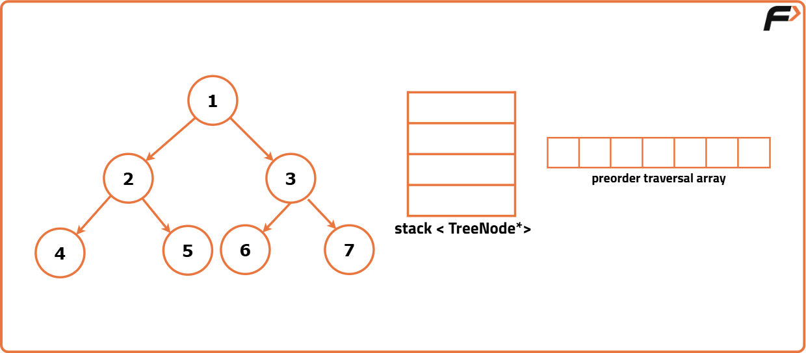
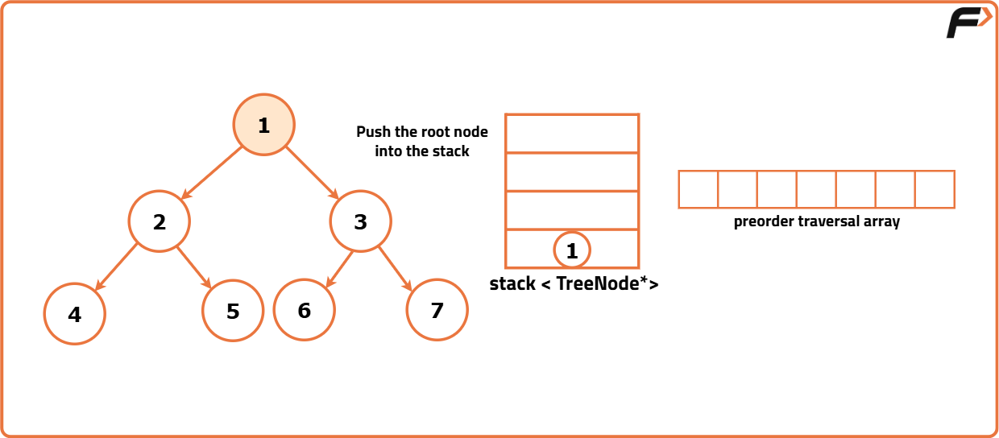
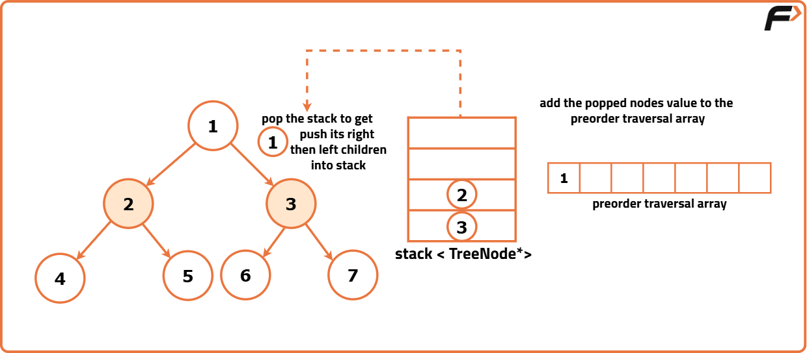
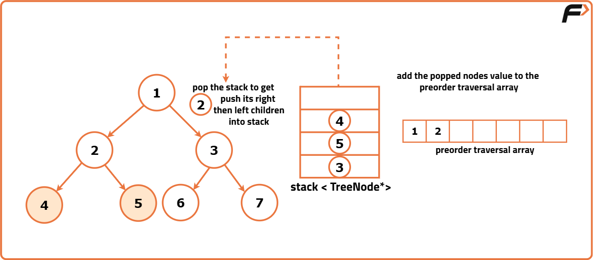
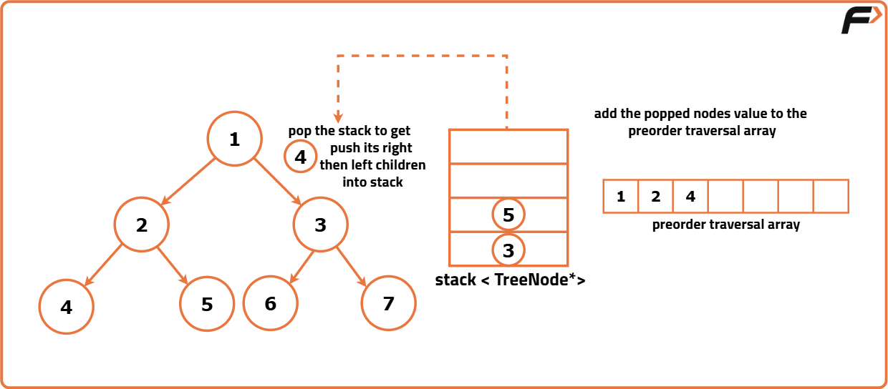
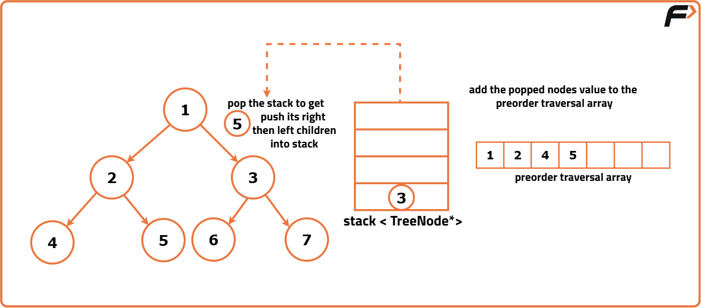
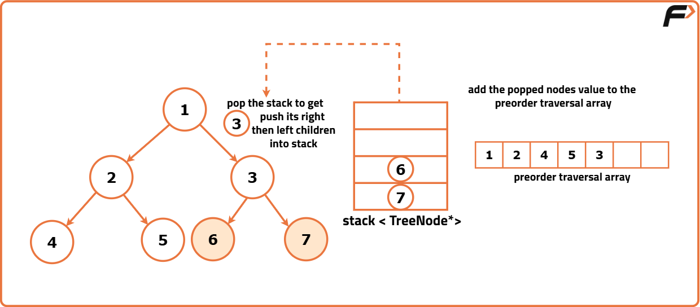
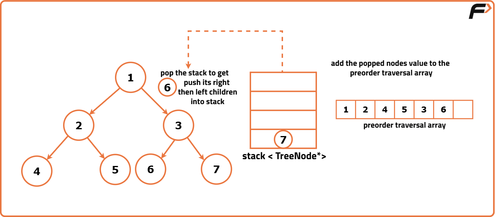
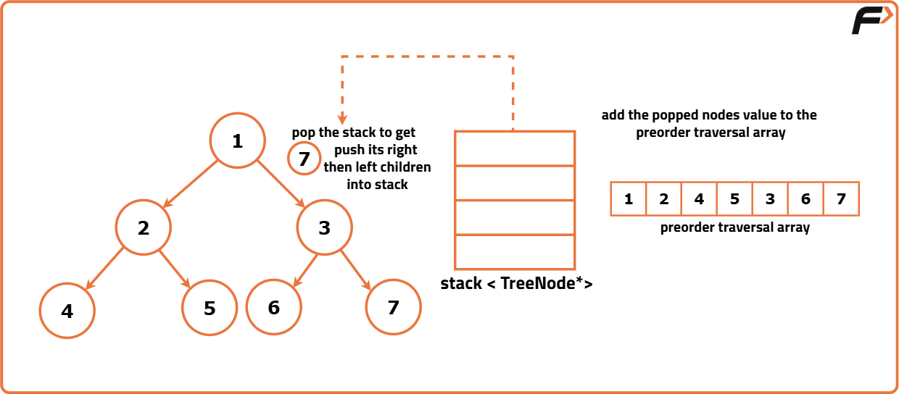

Iterative Preorder Traversal of Binary Tree
Problem Statement: Given the root of a Binary Tree, write a function that returns an array containing the preorder traversal of the tree using an iterative approach with a stack.
Examples
Example 1: Input: Binary Tree: 4 2 5 3 -1 7 6 -1 9 -1 -1 8 -1 1 Output: [4, 2, 3, 9, 1, 5, 7, 6, 8] Explanation: We traverse the binary tree in the order of Root, Left, and then Right recursively. This results in the following traversal: 4 → 2 → 3 → 9 → 1 → 5 → 7 → 6 → 8. Example 2: Input: Binary Tree: 1 2 3 4 5 6 7 -1 -1 8 -1 -1 -1 9 10 Output: [1, 2, 4, 5, 8, 3, 6, 7, 9, 10] Explanation: We traverse the binary tree in the order of Root, Left, and then Right recursively. This results in the following traversal: 1 → 2 → 4 → 5 → 8 → 3 → 6 → 7 → 9 → 10.
Approach
Algorithm
- Initialize an empty vector 'preorder' to store the preorder traversal result. Also, create a stack to help with the traversal, and push the root node onto the stack. If the root is null, return an empty traversal result, as there are no nodes to traverse.
- Begin by pushing the root of the binary tree onto the stack.
- While the stack is not empty, repeat the following:
- Get the current node from the top of the stack.
- Remove the node from the stack.
- Add the node's value to the preorder result vector.
- If the current node has a right child, push it onto the stack.
- If the current node has a left child, push it onto the stack as well. This ensures that the left child is processed first, following the preorder traversal rules.
- After completing the traversal, return the 'preorder' vector containing the traversal result.









Code
#include <bits/stdc++.h>
using namespace std;
// Define the TreeNode structure
struct TreeNode {
int val; // Value of the node
TreeNode* left; // Pointer to the left child
TreeNode* right; // Pointer to the right child
TreeNode(int x) : val(x), left(nullptr), right(nullptr) {} // Constructor to initialize a node
};
class Solution {
public:
// Function to perform preorder traversal of a binary tree iteratively
vector<int> preorderTraversal(TreeNode* root) {
vector<int> preorder; // Vector to store the preorder traversal result
// If the root is null, return an empty traversal result
if(root == nullptr) {
return preorder;
}
stack<TreeNode*> st; // Stack to store nodes during traversal
st.push(root); // Push the root node onto the stack
// Perform iterative preorder traversal
while(!st.empty()) {
root = st.top(); // Get the current node from the top of the stack
st.pop(); // Remove the node from the stack
preorder.push_back(root->val); // Add the node's value to the preorder result
// Push the right child onto the stack if exists
if(root->right != nullptr) {
st.push(root->right);
}
// Push the left child onto the stack if exists
if(root->left != nullptr) {
st.push(root->left);
}
}
// Return the preorder traversal result
return preorder;
}
};
int main() {
// Creating a binary tree
TreeNode* root = new TreeNode(1);
root->left = new TreeNode(2);
root->right = new TreeNode(3);
root->left->left = new TreeNode(4);
root->left->right = new TreeNode(5);
// Initializing the Solution class
Solution sol;
// Getting the preorder traversal
vector<int> result = sol.preorderTraversal(root);
// Displaying the preorder traversal result
cout << "Preorder Traversal: ";
for (int val : result) {
cout << val << " ";
}
cout << endl;
return 0;
}Complexity Analysis
Time Complexity: O(N), where N is the number of nodes in the binary tree. Each node is visited once during the traversal.
Space Complexity: O(H), where H is the height of the binary tree. The space is used by the stack to store nodes during traversal.